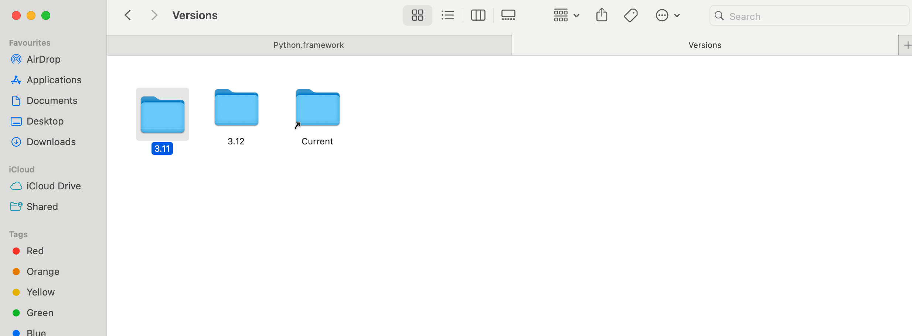
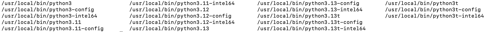
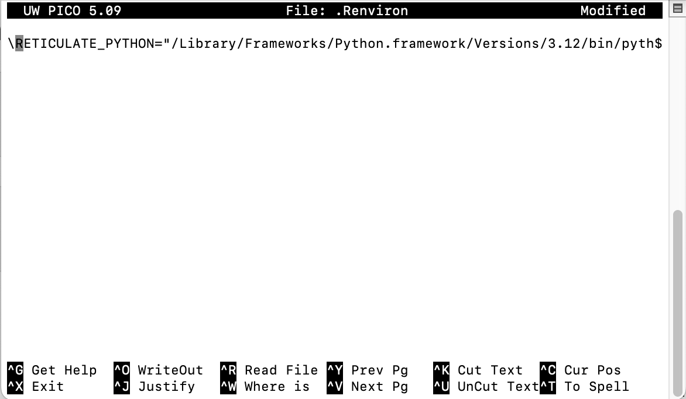

Code
library(reticulate)
py_require(c('pandas','pipdeptree'))
use_python("/Library/Frameworks/Python.framework/Versions/3.13/bin/python3.13")
library(reticulate)
py_require(c('pandas','pipdeptree'))
use_python("/Library/Frameworks/Python.framework/Versions/3.13/bin/python3.13")# Import the sys module to access system-specific parameters and functions
import sys
# Print the Python version to the console
print(sys.version)3.13.2 (v3.13.2:4f8bb3947cf, Feb 4 2025, 11:51:10) [Clang 15.0.0 (clang-1500.3.9.4)]# Import the python_version function from the platform module
from platform import python_version
# Print the Python version
print(python_version())3.13.2Go->computer->Macintosh HD->Library->Frameworks->Python.framework->Versions
Delete the old version Python folder:

list all Python files
ls /usr/local/bin/python*/usr/local/bin/python3
/usr/local/bin/python3-config
/usr/local/bin/python3-intel64
/usr/local/bin/python3.11
/usr/local/bin/python3.11-config
/usr/local/bin/python3.11-intel64
/usr/local/bin/python3.12
/usr/local/bin/python3.12-config
/usr/local/bin/python3.12-intel64
/usr/local/bin/python3.13
/usr/local/bin/python3.13-config
/usr/local/bin/python3.13-intel64
/usr/local/bin/python3.13t
/usr/local/bin/python3.13t-config
/usr/local/bin/python3.13t-intel64
/usr/local/bin/python3t
/usr/local/bin/python3t-config
/usr/local/bin/python3t-intel64
delete the old version
brew uninstall python@3.11list all files in home path
Terminal
ls -afind .Renviron and edit to new version
Terminal
nano .Renviron
Terminal
python3 -m pip install jupyterPython has several built-in data types to store different kinds of values. Understanding these fundamental types is crucial for writing effective Python code.
Python supports various numerical types, including integers (whole numbers) and floating-point numbers (numbers with decimal points).
Integers are whole numbers, positive or negative, without a decimal point.
# Example of an integer
my_integer = 10
print(f"Value: {my_integer}, Type: {type(my_integer)}")Floating-point numbers (floats) are numbers that have a decimal point.
# Example of a floating-point number
my_float = 10.5
print(f"Value: {my_float}, Type: {type(my_float)}")Strings are sequences of characters, used for text. They are enclosed in single quotes (') or double quotes (").
# Example of a string
my_string = "Hello, Python!"
print(f"Value: {my_string}, Type: {type(my_string)}")Booleans represent one of two values: True or False. They are primarily used in conditional statements and loops.
# Example of a boolean
my_boolean = True
print(f"Value: {my_boolean}, Type: {type(my_boolean)}")Value: True, Type: <class 'bool'># Import the os module, which provides a way of using operating system dependent functionality
import os
# Get the current working directory
os.getcwd()# Import the os module for interacting with the operating system
import os
# Import the pandas library for data manipulation
import pandas as pd
# Get a list of all files and directories in the current working directory
nameList=os.listdir(os.getcwd())
# Create an empty list to store file sizes
size_list=[]
# Loop through each file in the nameList
for file in (nameList):
# Get the size of the file in megabytes and append it to the size_list
size_list.append((os.stat(file).st_size)/1000000)
# Create a pandas DataFrame from the file names and sizes
file_size=pd.DataFrame(list(zip(nameList, size_list)),
columns=['file','size_MB'])
# Display the DataFrame
file_size file size_MB
0 .Rhistory 0.003374
1 test_folder 0.000064
2 0 Basic python_files 0.000096
3 0 Basic python.rmarkdown 0.010036
4 .DS_Store 0.008196
5 0-Basic-python.rmarkdown 0.010036
6 images 0.000960
7 0 Basic python.qmd 0.010035
8 hotels.csv 16.855599
9 .RData 0.002595
10 3 statistic Book.qmd 0.000453
11 1 Python Book.qmd 0.000644
12 2 Data Book.qmd 0.001405
13 data 0.000096# Import the os module
import os
# Get file status information for '3 statistic Book.qmd'
a=os.stat('3 statistic Book.qmd')
# Print the file status
aos.stat_result(st_mode=33188, st_ino=69773616, st_dev=16777232, st_nlink=1, st_uid=501, st_gid=20, st_size=453, st_atime=1743835901, st_mtime=1712419159, st_ctime=1751465747)show st_atime
# Import the datetime module
import datetime as dt
# Get the last access time of the file and format it as YYYYMMDD
dt.date.fromtimestamp(a.st_atime).strftime('%Y%m%d')'20250405'create it if it does not exist
# Check if the folder 'test_folder' does not exist
if not os.path.exists('test_folder'):
# Create the folder
os.mkdir('test_folder') # Import the os module
import os
# Delete the folder 'test_folder'
os.rmdir('test_folder')# Import the os module
import os
# Delete the file 'test.csv'
os.remove('test.csv')# Import the shutil module, which provides a higher-level interface for file operations
import shutil
# Copy the file 'test.csv' to 'test2.csv'
shutil.copyfile('test.csv', 'test2.csv')# Import the urllib.request module for working with URLs
import urllib.request
# Define the URL of the file to download
url="https://raw.githubusercontent.com/rfordatascience/tidytuesday/master/data/2020/2020-02-11/hotels.csv"
# Download the file from the URL and save it as 'hotels.csv'
urllib.request.urlretrieve(url, "hotels.csv")# Assign values to variables a and b
a = 200
b = 33
# Check if b is greater than a
if b > a:
# If b is greater than a, print this message
print("b is greater than a")
# If b is not greater than a, check if a and b are equal
elif a == b:
# If a and b are equal, print this message
print("a and b are equal")
# If neither of the above conditions are true, execute the else block
else:
# Print this message because a is greater than b
print("a is greater than b")a is greater than b# Create a list of fruits
fruits = ["apple", "banana", "cherry"]
# Iterate through the fruits list
for x in fruits:
# Print each fruit
print(x)apple
banana
cherryit will add an index
# Create a list of fruits
fruits = ["apple", "banana", "cherry"]
# Use enumerate to get both the index and value of each fruit
list(enumerate(fruits))[(0, 'apple'), (1, 'banana'), (2, 'cherry')]# Iterate through the fruits list with index
for index,i in enumerate(fruits):
# Print the index
print("The index is:",index)
# Print the element
print("The element is:",i)The index is: 0
The element is: apple
The index is: 1
The element is: banana
The index is: 2
The element is: cherry# Initialize a counter variable
i = 1
# Loop as long as i is less than 4
while i < 4:
# Print the value of i
print(i)
# Increment i by 1
i += 11
2
3With a break statement
# Initialize a counter variable
i = 1
# Loop as long as i is less than 6
while i < 6:
# Print the value of i
print(i)
# If i is equal to 3, break out of the loop
if i == 3:
break
# Increment i by 1
i += 11
2
3# Define a function named my_function
def my_function():
# Print a message inside the function
print("Hello from a function")# Call the my_function
my_function()Hello from a function# Define a function named my_function that takes one argument, x
def my_function(x):
# Print the argument x concatenated with a string of exclamation marks
print(x + " !!!!!!!!!!!!!!!!!")# Call the my_function with the argument 'hello'
my_function('hello')hello !!!!!!!!!!!!!!!!!# Define a function named my_function that takes one argument, x, with a default value of 'hello'
def my_function(x='hello'):
# Print the argument x concatenated with a string of exclamation marks
print(x + " !!!!!!!!!!!!!!!!!")# Call the my_function without any arguments, so it will use the default value for x
my_function()hello !!!!!!!!!!!!!!!!!# Define a function named adding_ten that takes one argument, x
def adding_ten(x):
# Add 10 to x and store the result in a
a=x+10
# Return the value of a
return(a)# Call the adding_ten function with the argument 3 and store the result in the variable result
result=adding_ten(3)
# Print the value of result
result13it is a faster way to define a function
# Define a lambda function named lambda_adding_ten that takes one argument, x, and returns x + 10
lambda_adding_ten=lambda x:x+10# Call the lambda_adding_ten function with the argument 4
lambda_adding_ten(4)14it’s a for loop in a list
# Create a list of fruits
fruits = ["apple", "banana", "cherry", "kiwi", "mango"]
# Create a new list containing only fruits that have the letter "a" in their name
newlist = [x for x in fruits if "a" in x]
# Print the new list
print(newlist)['apple', 'banana', 'mango']The Python Package Index (PyPI).https://pypi.org//

# Import the os module
import os
# Execute the shell command 'pip show pandas' to display information about the pandas package
os.system('pip show pandas')0# Import the os module
import os
# Execute the shell command 'pip list' to display a list of all installed packages and their versions
os.system('pip list')0import site; site.getsitepackages()# Import the os module
import os
# Execute the shell command 'pipdeptree --packages pandas' to display the dependency tree for the pandas package
os.system('pipdeptree --packages pandas')0# Import the os module
import os
# Execute the shell command 'pipdeptree' to display the dependency tree for all installed packages
os.system('!pipdeptree')32512